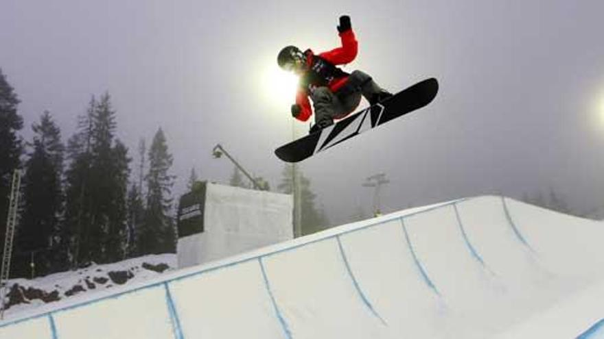

¿Que es el snowboard?
Es una actividad que consiste en bajar una montaña nevada o desplazarse por superficies cubiertas de nieve sobre una sola tabla, manteniendo los pies de lado (no hacia adelante como en el esquí).
Modalidades
Modalidades de snowboard Freeride: Bajar por montaña, nieve profunda espacios abiertos.
Freestyle: Saltos, trucos y barandillas en el snowpark.
Alpino / carving: Bajadas rápidas, giros limpios y marcados sobre pista dura.
Boardercross: Carreras con obstáculos compitiendo contra otros riders.
Proximas Competiciones

Copa del Mundo FIS Snowboard 2025/26 Park & Pipe
La temporada comienza con Big Air en Secret Garden (China) el 27 de noviembre de 2025. FIES y Snowboard+2FIES y Snowboard+2Hay otras etapas previstas de Halfpipe Slopestyle y Big Air durante la temporada.
Campeonatos del Mundo FIS de Freestyle y Snowboard 2025
Calendario completo disponible según FIS. FIES y Snowboard+1 Por ejemplo, eventos de “Parallel Giant Slalom” se celebrarán en localidades como Mylin (China) los días 6-7 de diciembre de 2025.
Copa del Mundo FIS Snowboard Cross / Paralelo
Se celebran del 18 al 30 de marzo de 2025 en la región de Engadin (Suiza). En St. Moritz habrá pruebas de Big Air y de snowboard alpino. En Silvaplana será el slopestyle y halfpipe.